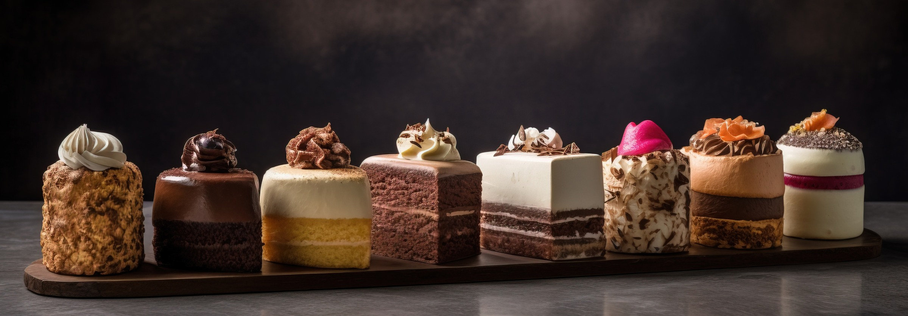
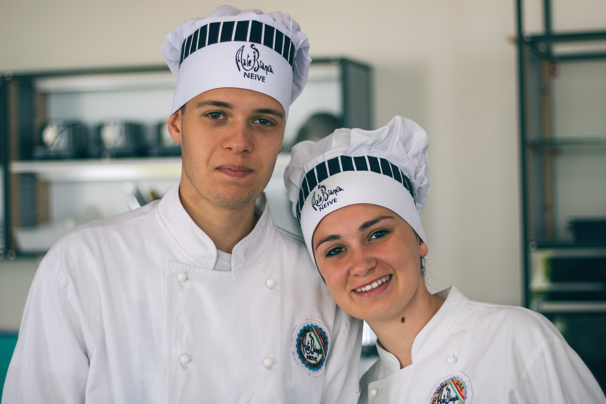
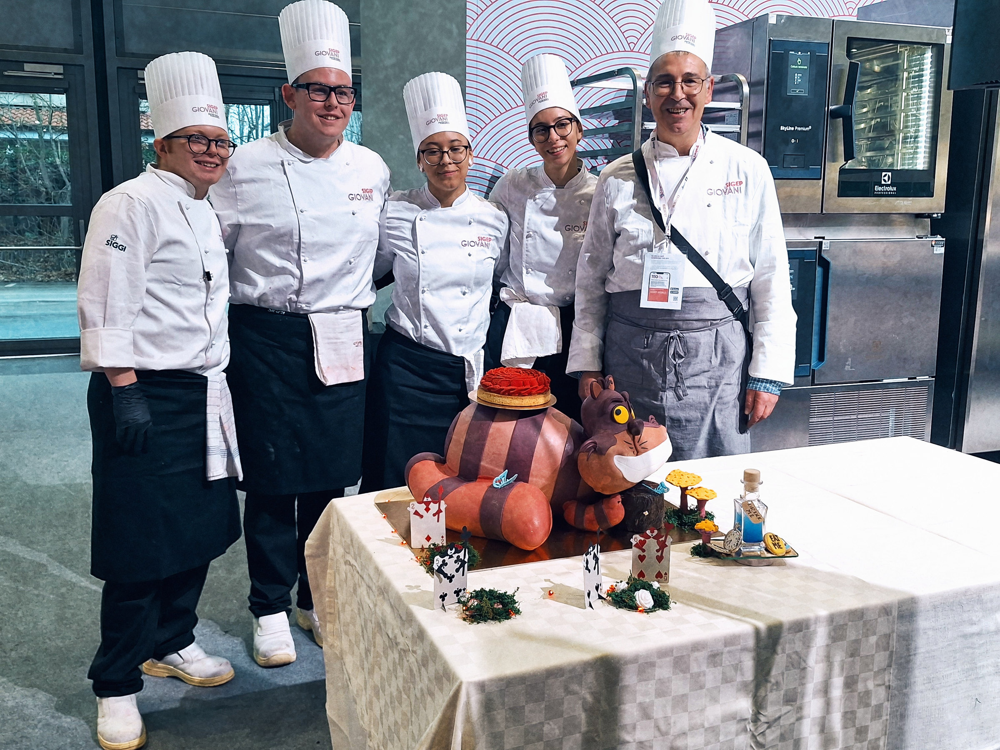
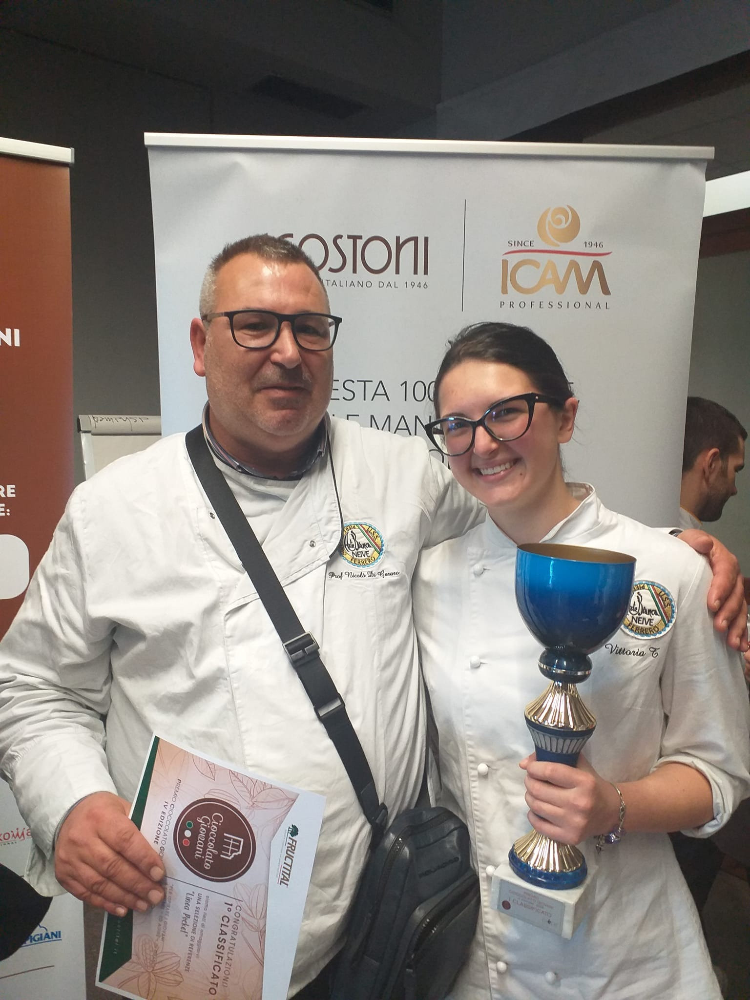

I nostri fiori all’occhiello
Concorsi

Talenti in gara
Gli studenti dell’Arte Bianca di Neive partecipano ogni anno a competizioni nazionali e internazionali di pasticceria e panificazione.
Queste esperienze permettono di confrontarsi con altri giovani talenti, mettere in pratica le competenze acquisite e conquistare riconoscimenti che attestano la qualità della nostra formazione.

Le gare dell’Arte Bianca


2026 - SIGEP Giovani
Rimini, gennaio 2026
Anche quest’anno gli studenti dell’Arte Bianca di Neive hanno partecipato al SIGEP Giovani, uno dei palcoscenici più prestigiosi dedicati ai talenti emergenti della panificazione, pasticceria e arte dolciaria.
È il concorso del SIGEP di Rimini riservato agli istituti professionali alberghieri e di pasticceria di tutta Italia: ogni scuola partecipa con una squadra di quattro studenti e un docente tutor.
Un’esperienza intensa, fatta di studio, sacrificio, creatività e tanta passione, dove i ragazzi hanno potuto confrontarsi con coetanei provenienti da tutta Italia e respirare l’eccellenza del nostro settore. Vederli all’opera, consapevoli delle proprie competenze e orgogliosi del percorso intrapreso, è la conferma che la tradizione dell’Arte Bianca, quando incontra l’innovazione e la formazione di qualità, costruisce il futuro.
Neive c’era. E ha lasciato il segno.

2024 - Premio Cioccolato Giovani
1°L’Arte Bianca classificata al 1° posto
Il Premio Cioccolato Giovani è un concorso nazionale di Cioccolateria organizzato dall'Associazione Pièce e riservato agli studenti degli ultimi anni delle scuole di settore di tutta Italia (istituti professionali e alberghieri), di età compresa fra i 17 e i 21 anni.
Vittoria Tibaldi dell'Arte Bianca di Neive ha vinto la quarta edizione del Premio Cioccolato Giovani!
Vittoria, oltre al primo premio, si è aggiudicata il premio speciale "Scintilla creativa" in memoria di Emilia Chiriotti.
Complimenti al prof. Nicolò Di Gesaro, che ha ricevuto il premio quale miglior formatore intitolato alla memoria del grande pasticcere Capitano Rosso, e complimenti alla sua allieva, davvero un ottimo risultato!!

2023 - Campionato nazionale di pasticceria
5ªL’Arte Bianca ospita la quinta edizione
L'Istituto vincitore ha avuto l'onore di ospitare l'edizione successiva della manifestazione ed è con grande orgoglio e senza falsa modestia che per 3 giorni (28, 29 e 30 marzo) Neive è stata Capitale Italiana della Pasticceria.
La quinta edizione del Campionato Nazionale di pasticceria dedicato agli istituti alberghieri d’Italia, promosso dal Ministero della Pubblica Istruzione e di rilievo nazionale, organizzato dalla Fipgc (Federazione Italiana Pasticceria e Gelateria), ha visto la partecipazione di studenti e docenti di 30 scuole provenienti da tutta Italia ed è stato patrocinato dalla Regione Piemonte e dai Comuni di Alba e Neive.


2022 - Campionato nazionale di pasticceria
1°L’Arte Bianca classificata al 1° posto
I migliori giovani talenti della pasticceria italiana si sfidano a colpi di cioccolato, glassa, pan di spagna e caffè per contendersi la palma di miglior pasticcere d’Italia juniores.
Ciascuna scuola sarà rappresentata da una squadra formata da due concorrenti, che saranno giudicati da una giuria composta da maestri pasticceri della FIPGC e rappresentanti del MIUR.
Il 6 maggio 2022 è una data da ricordare per l'Arte Bianca di Neive: Silvia Giamello e Mattia Sabatini, con il loro professore Rosario Torre, si sono classificati al primo posto con il loro spettacolare dolce “Dromos” alla cerimonia di premiazione della quarta edizione del Campionato Nazionale di pasticceria dedicato agli istituti alberghieri d’Italia presso l’Istituto IPIA “Galileo Ferraris” di Iglesias (Sardegna).